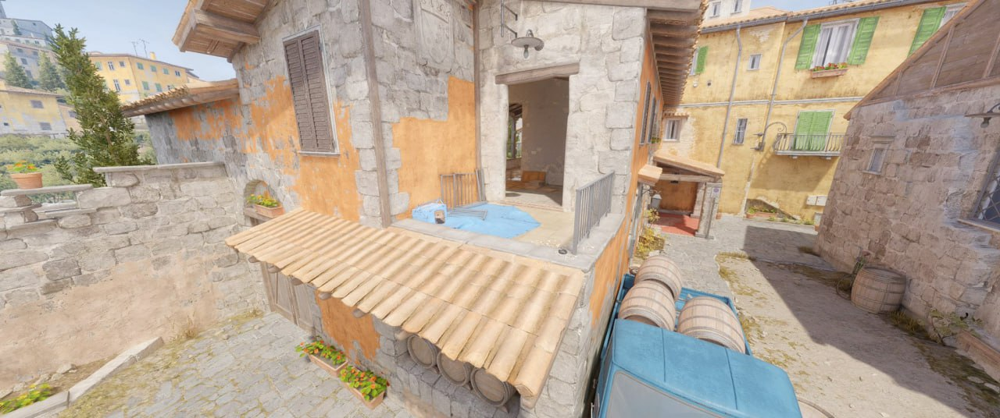

Valve releases changes to several CS2 maps
Drake WhartonIt has been about a month since Counter-Strike 2s official release, and Valve have been busy pushing update after update as the community continues to discover glitches and bugs within the game. On October 25th, another update brought surprise and satisfaction to many in the Counter-Strike community, one focused on changing and polishing most maps within CS2. While most maps received general lighting and clipping improvements, there are a few notable changes within the update. The most notable change comes within the map Inferno, where a section of railing near the A site balcony has been removed, allowing for better access into the site from the apartments. This change can be seen in the image below. Additionally, a bug where self-inflicted incendiary damage counted as team damage has been patched. Furthermore, Valve continues to tweak weapon skins and stickers as they transition from CS:GO to CS2. The most notable adjustment in the update comes for the Desert Eagle, where sticker sizes have been reduced in order to prevent strange sticker placements. This update has been the most impactful since the “Smooth Criminal” foot-clipping bug was patched nearly two weeks prior. Counter-Strike fans are happy to see their game being improved, however many are still frustrated with the lack of content since its release, leaving many wondering when the next big update will be.
Image depicting removed railing